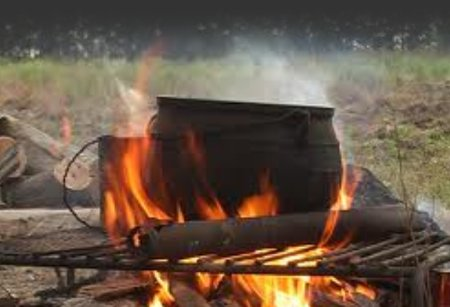

Equipo y Menú
Es muy conveniente que cada Patrulla disponga de los artículos necesarios para llevar a cabo las actividades que le son propias.
Durante este campamento, debe evitarse en lo posible estar pidiendo prestados herramientas y otros equipos, tanto a las otras patrulla, como al Staff de Tropa, o inclusive a los participantes de otros Subscampos. Por eso recomendamos ampliamente preveer que van a necesitar paraesta actividad, y llevarlo consigo.
También es muy importante proveerse las calorías necesarias durante una actividad al aire libre, ya que de lo contario se sentirán casados y hambrientos todo el tiempo.
| Peso en Kg. | Calorías necesarias |
|---|---|
| 40 |
1.400 |
| 45 |
1.550 |
| 50 |
1.700 |
| 55 | 1.870 |
| 60 | 2.050 |
| 70 |
2.400 |
| 80 |
2.720 |
| 90 |
3.100 |
Investiga cuales son las cargas calóricas de los alimentos que piensan consumir, de esa manera sabrán cuanto debe comer cada miembro de la Patrulla de acuerdo a sus propio peso.
¿Qué se evaluará con respecto al equipo y menú?
Diseño de Menú y elaboración de alimentos
Para que tu Patrulla pueda dar el máximo de si misma en esta competencia, deberá estar bien alimentada durante todo el evento. Por lo cual lo primero es elaborara un Menú adecuado, y lo segundo preparar bien la comida, una cosa debe ir acompañada de la otra.
Algo que no puede faltar son los nutrientes… proteína, carbohidratos y grasa... Además, debe ser rico en vitaminas, minerales y fibra.
Busquen una sugerencia de lo que puede ser un menú balanceado y saludable para tres días de campamento. Por lo general el desayuno del primer día y la cena del último son personales.
Cajón de Patrulla
Esto se refiere más que al baúl donde guardan sus pertenencias, es la planificación del equipamiento que debe tener la Patrulla, el cual ha de cubrir todas sus necesidades en el Evento. Se tomará muy en cuenta el hecho de que una Patrulla esté pidiendo cosas prestadas, ya que eso indica justamente lo contario a lo que hemos dicho hasta ahora.
Un buen ejemplo de lo que debe llevar una Patrulla es el suiguiente: Mazo de madera para estacas, Hacha de mano, Sierra, Pala (si es posible plegable), Bidones, Lámparas, Combustible (querosen o similar), Cuerdas, Mecatillo, Alambre, Parrilla, Fósforos, Papel, Bolsas para residuos, Detergente Biodegradable, Esponja, Trapos, Aceite 3 en 1, entre otros
Para la cocina de una Patrulla, los utensilios básicos son: Olla pequeña, Olla grande, Sartén, Espumadera, Cucharón, Colador, Tabla de cocina, Envases, Taza de Medir, Cogedor, Cuchillo y Bandeja.
Botiquín de Primeros Auxilios
Las Patrullas deben tener uno con los elementos para curaciones menores (analgésicos y antipiréticos, desinfectante, curitas, algodón, guantes descartables, alguna cosa más por el estilo), ya que aun cuando el Staff Central del Camporee contará con un equipamiento más completo, es necesario que todos estemos siempre preparados para la eventualidades.